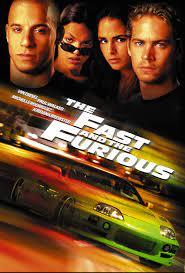

"Fast & Furious" is a high-octane action film franchise that first hit the big screen in 2001. Directed by Rob Cohen, the initial film, "The Fast and the Furious," introduced audiences to a world of illegal street racing, fast cars, and a close-knit crew of characters. Led by Dominic Toretto (played by Vin Diesel), the crew includes Brian O'Conner (played by Paul Walker), Mia Toretto (played by Jordana Brewster), Letty Ortiz (played by Michelle Rodriguez), and more.
